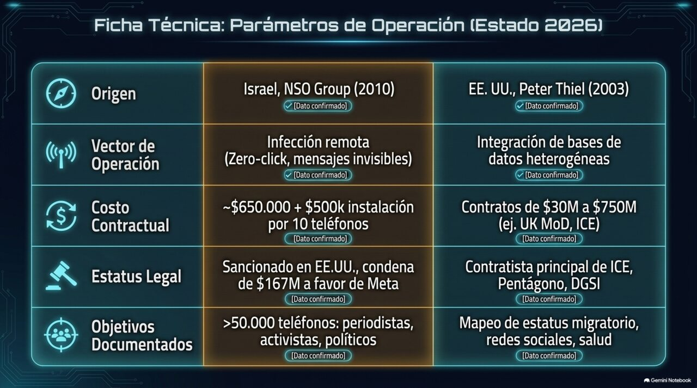
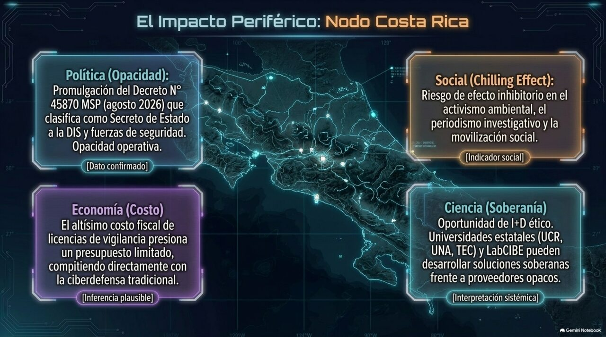
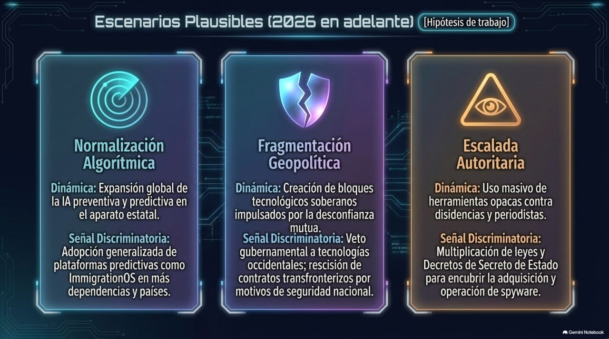
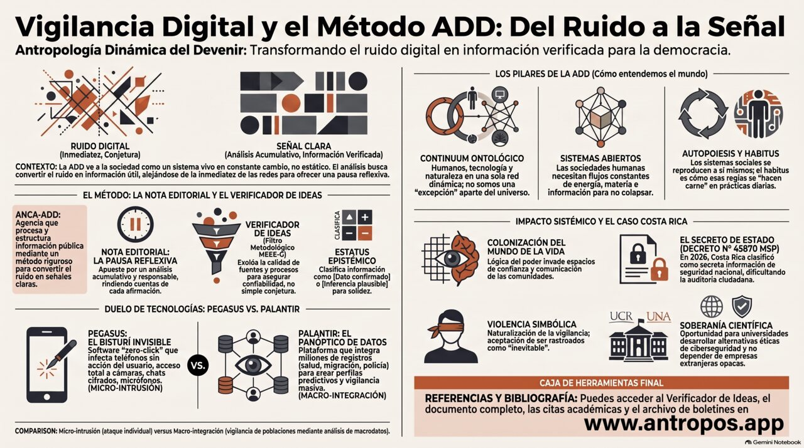

VIGILAR / INTEGRAR
Pegasus y Palantir: dos arquitecturas del poder de ver. Qué son, qué hacen, en qué se diferencian y por qué le importan a Costa Rica.
01 Delimitación del fenómeno
Antes de comparar, separar. La pregunta del título —«¿espionaje?»— se responde distinto para cada sistema.
Pegasus y Palantir suelen mencionarse juntos como sinónimos de «vigilancia», pero son artefactos de naturaleza distinta que operan en momentos distintos del mismo proceso de poder. Confundirlos impide entender qué está en juego con cada uno.
Pegasus es un arma de intrusión puntual: un programa espía (spyware) que se infiltra en un teléfono específico para extraer todo su contenido. Palantir es una plataforma de integración analítica: un sistema que toma datos ya existentes —dispersos en muchas bases de datos— y los une para revelar patrones y perfiles. Uno entra a la fuerza en un dispositivo; el otro ordena océanos de datos que ya fueron recolectados. La distinción importa porque sus riesgos, sus marcos legales y sus formas de control son diferentes.
Pegasus
Spyware de grado militar que infecta iOS y Android, en muchos casos sin que la víctima toque nada (ataque «zero-click»).
- Lee mensajes, rastrea ubicación y llamadas, activa micrófono y cámara.
- Explota vulnerabilidades de apps comunes (iMessage, WhatsApp).
- Se vende solo a gobiernos, para «intercepción legal».
- Intrusión dirigida: un blanco, un teléfono, a la vez.
Palantir
Plataformas de software (Gotham, Foundry, AIP) que integran y analizan datos masivos ya recolectados por el cliente.
- Une bases dispersas (fiscales, biométricas, viajes, redes).
- Construye perfiles y mapas de relaciones entre personas.
- Vende a gobiernos y a grandes empresas; cotiza en bolsa.
- Integración masiva: millones de registros a la vez.
La pregunta «¿espionaje?» recibe, entonces, dos respuestas. En Pegasus, el espionaje es el mecanismo mismo: no hay uso del producto que no sea intrusión encubierta. En Palantir, el espionaje es un uso posible entre otros: la misma plataforma que ordena listas de espera hospitalarias puede ordenar listas de personas a deportar. El riesgo no vive en el código, sino en qué datos se le conectan y bajo qué control.
02 Estado de la información disponible
Qué sabemos con respaldo documental, a junio de 2026.
El hecho más significativo del período es que, por primera vez, una empresa de spyware fue responsabilizada en tribunales estadounidenses. En mayo de 2025, un jurado federal condenó a NSO a pagar a WhatsApp/Meta 167,2 millones de dólares en daños punitivos más 444.719 en compensatorios, por una campaña de 2019 que comprometió ~1.400 usuarios explotando una vulnerabilidad en el sistema de llamadas de WhatsApp. En octubre de 2025, la jueza Phyllis Hamilton (Distrito Norte de California) emitió una orden judicial permanente que prohíbe a NSO volver a atacar la infraestructura de WhatsApp, pero redujo la indemnización de 167 a 4 millones. NSO apeló, alegando que la prohibición es «catastrófica» y «potencialmente existencial» para la empresa. En mayo de 2026, doce organizaciones de derechos civiles presentaron escritos de apoyo a la prohibición.
Durante el juicio, NSO admitió bajo juramento lo que durante años había negado: que su software puede comprometer «todo el contenido» de un teléfono, y que la empresa —no solo sus clientes gubernamentales— opera los exploits. Citizen Lab documentó usuarios afectados en al menos 20 países. Apple había demandado por separado (exploit «FORCEDENTRY», 2021) pero retiró el caso en 2024, por temor a exponer su propia inteligencia de amenazas.
Palantir opera tres plataformas: Gotham (inteligencia, defensa, policía), Foundry (integración de datos para gobierno y empresa) y AIP (automatización con IA). Su patrón de crecimiento, descrito por analistas como «aterrizar y expandir», quedó visible en dos geografías:
Estados Unidos. En julio de 2025 el Ejército consolidó 75 contratos en un acuerdo único de hasta 10.000 millones de dólares a diez años. El sistema Maven de IA militar pasó de 480 millones a 1.300 millones. En abril de 2025, ICE pagó 30 millones por «ImmigrationOS», una herramienta de «visibilidad casi en tiempo real» para priorizar deportaciones que integra pasaportes, números de seguridad social, datos del fisco, placas, teléfonos y reconocimiento facial; se suma a un acumulado de contratos de ICE con Palantir superior a 200 millones desde 2014.
Reino Unido. Palantir «aterrizó» en el NHS durante la pandemia con un contrato de una libra esterlina; para 2023 ese vínculo era un contrato de 330 millones de libras por la Federated Data Platform (FDP). En mayo de 2026, una filtración al Financial Times reveló que ingenieros de Palantir habían recibido acceso «ilimitado» a datos identificables de pacientes en un entorno técnico del NHS (el NDIT). Palantir y el NHS sostienen que el acceso fue limitado, temporal y supervisado; el British Medical Association, el Good Law Project, Amnistía Internacional y Privacy International piden cancelar el contrato. Una cláusula de salida estará disponible desde febrero de 2027.
En el plano bursátil, Palantir se ha convertido en una de las acciones más caras y debatidas del mercado: a finales de 2025 cotizaba a múltiplos extraordinarios (en torno a 85–117 veces las ventas previstas), con un alza acumulada superior al 2.700 % desde 2023 que muchos analistas consideran desacoplada de su crecimiento real de ingresos (proyectado en ~42 % para 2026).
03 Contraste sistemático
Dos máquinas del ver, comparadas eje por eje.

| Eje | Pegasus (NSO) | Palantir |
|---|---|---|
| Naturaleza | Arma de intrusión: spyware ofensivo | Plataforma de integración y análisis de datos |
| Qué hace | Entra en un dispositivo y extrae su contenido | Une datos ya recolectados y revela patrones |
| Escala | Dirigida: un blanco a la vez | Masiva: millones de registros simultáneos |
| Momento del proceso | Recolección encubierta de datos nuevos | Procesamiento y correlación de datos existentes |
| Visibilidad | Clandestina por diseño; difícil de detectar | Contractual y pública, pero algoritmo opaco |
| Cliente | Solo gobiernos (intercepción «legal») | Gobiernos y grandes empresas |
| Modelo de negocio | Venta de capacidad de intrusión por licencia | Contratos de plataforma + cotización bursátil |
| Riesgo principal | Espionaje a periodistas, activistas, opositores | Estado-vigilante por agregación; dependencia |
| Punto de control | ¿A quién se le vende y con qué supervisión judicial? | ¿Qué datos se conectan y quién puede leerlos? |
| Estado 2026 | Acorralada en tribunales; apelando; «existencial» | En expansión; valoración en debate; resistencia social |
La diferencia decisiva: Pegasus produce datos nuevos violando un dispositivo; Palantir ordena datos que el cliente ya tiene. Por eso Pegasus se combate con litigio y sanción (es intrínsecamente intrusivo), mientras que Palantir se discute con gobernanza de datos (su daño depende de la configuración). Pero convergen en un punto: ambos concentran, en manos privadas, una capacidad de ver que antes era exclusiva —y limitada— del Estado.
04 Evaluación epistémica · MEEE-G
Qué tan firme es cada afirmación que circula sobre estos sistemas.
| Afirmación | Código | Justificación procesual |
|---|---|---|
| Un jurado de EE.UU. condenó a NSO por el hackeo a WhatsApp (2019, ~1.400 usuarios). | [DC] | Veredicto judicial de mayo 2025; orden permanente de oct. 2025; cobertura concordante (Xataka, The Record, R3D, Business & Human Rights Centre). |
| NSO opera los exploits, no solo sus clientes gubernamentales. | [DC] | Admisión bajo juramento en juicio; documentada en los registros del caso WhatsApp. |
| Colombia adquirió Pegasus por ~11 millones de dólares durante el gobierno Duque. | [IP] | La fiscal general confirmó que la operación financiera existió; el Min. de Defensa israelí confirmó la venta vía Haaretz; pero ninguna agencia colombiana lo admite y no aparece el software. Inferencia fuerte, no aún dato cerrado. |
| Palantir integra datos de ICE para priorizar deportaciones (ImmigrationOS). | [DC] | Contrato de 30 M (abril 2025) documentado por American Immigration Council y registros federales reportados por NYT. |
| Personal de Palantir tuvo acceso «ilimitado» a datos identificables del NHS. | [Int] | El término «ilimitado» proviene de un documento técnico filtrado (FT); Palantir lo interpreta como permiso técnico acotado a un entorno de prueba. Interpretación en disputa entre fuentes. |
| La valoración bursátil de Palantir está desacoplada de su negocio real. | [H] | Hipótesis de varios analistas (múltiplos de 85–117× ventas); contestada por quienes proyectan crecimiento sostenido. No es consenso. |
| El gobierno de Costa Rica anunció (24 jun 2026) que importará tecnología de inteligencia israelí (Mossad) contra la evasión fiscal y el contrabando. | [DC] | Anuncio del ministro de Hacienda Rodrigo Chaves en conferencia de prensa, documentado por El Financiero; cita textual registrada. Hecho confirmado. |
| La tecnología anunciada es específicamente Pegasus (NSO Group). | [IP] | Inferencia, no dato: Chaves habló de «tecnología del Mossad» sin nombrar producto, empresa, costo ni plazo. El vínculo con Pegasus lo introduce la prensa como contexto de procedencia israelí, no como producto confirmado. No debe afirmarse como [DC] hasta que se conozca el paquete. |
| Costa Rica adquirió o usó Pegasus en el pasado. | [C] sin respaldo | No se halló evidencia documental de compra ni uso previo. Distinto del anuncio de intención de 2026, que sí está confirmado. |
05 Lectura dinámica · ADD
El fenómeno como sistema: atractores, acoplamientos y el parámetro que decide su trayectoria.
Pegasus y Palantir son dos respuestas a una misma presión: la cantidad de información personal digitalizada creció más rápido que la capacidad institucional de procesarla y que los marcos legales de protegerla. En esa brecha emergen dos atractores privados. Pegasus es un atractor de intrusión: resuelve el problema de «no veo lo que está cifrado» perforando el dispositivo. Palantir es un atractor de integración: resuelve el problema de «tengo los datos pero dispersos» unificándolos en una sola superficie de lectura.
En clave de clausura organizacional (Maturana/Varela), el dato decisivo del caso Palantir es la advertencia de los propios técnicos del NHS: aunque se retire a Palantir, «el genio ya salió de la botella». La plataforma reorganiza la manera en que la institución conoce y decide; el acoplamiento estructural entre el Estado y el integrador privado modifica al Estado mismo, que pierde la capacidad de conocer su propia información sin el intermediario. Esa es la dependencia que ningún contrato revierte por completo.
El sistema está en bifurcación: la condena a NSO y la presión sobre el contrato del NHS son perturbaciones que empujan hacia un atractor de rendición de cuentas; la expansión de contratos militares y de ICE empuja hacia el atractor de normalización. El parámetro de control no es la tecnología —que seguirá existiendo— sino la respuesta a una pregunta institucional: quién puede ver, sobre quién, y bajo qué supervisión verificable. Mientras ese parámetro no se fije por ley y auditoría, el régimen permanece turbulento.
06 Capa de Sistemas-Mundo
La vigilancia como mercancía estratégica del ciclo de acumulación actual.
Las dos empresas dibujan la geografía del poder informacional. NSO es un instrumento de la posición de Israel como exportador de seguridad: su spyware fue, durante años, un activo diplomático —se vendía con el visto bueno del Ministerio de Defensa israelí, y su exportación tejía alianzas—. El caso colombiano lo muestra con crudeza: la venta requería aval estatal israelí, y el pago viajó en efectivo en aviones privados hacia un banco en Israel. La vigilancia como mercancía de exportación geopolítica.
Palantir es un instrumento del núcleo estadounidense en su fase de capitalismo financiero-informacional (Arrighi): no vende intrusión, vende la infraestructura sobre la que el Estado del núcleo —y sus aliados— organizan su capacidad de ver. Su expansión al NHS británico, a la OTAN y a ministerios europeos es una forma de acoplamiento de la periferia y semiperiferia a la infraestructura cognitiva del centro: el dato es local, pero la plataforma que lo vuelve legible es del núcleo, y la dependencia que crea es estructural. El informe del ejército suizo que temía que Palantir transfiriera datos a la CIA/NSA —algo que la empresa niega— expresa exactamente esa ansiedad de soberanía.
La valoración bursátil extraordinaria de Palantir cierra el cuadro: el mercado de capitales del núcleo apuesta a que la vigilancia integrada será la cuasi-mercancía monopólica de la próxima década —el equivalente informacional de lo que el petróleo fue para el siglo XX—.
07 Relevancia para Costa Rica
El 24 de junio de 2026, el gobierno anunció que importará tecnología de inteligencia israelí contra la evasión fiscal. Acá ya no hablamos de una hipótesis: hablamos de una decisión en curso.

El hecho, con su estatus declarado. El 24 de junio de 2026, el ministro de Hacienda —el expresidente Rodrigo Chaves, nombrado por la presidenta Laura Fernández como ministro de la Presidencia y de Hacienda, un caso inédito— anunció en conferencia de prensa que el país «usará tecnología desarrollada en Israel por el Mossad para combatir la evasión fiscal y el contrabando». Sus palabras: «Vienen tecnologías desarrolladas por el Mossad en Israel para detectar el contrabando en este país a través de las importaciones». Esto es [DC] dato confirmado. Ahora bien: Chaves no nombró el producto, la empresa, el costo ni el plazo, ni confirmó si hay contrato firmado; prometió presentar el paquete completo a la presidenta la semana del 30 de junio. Que esa tecnología sea específicamente Pegasus es por ahora [IP] inferencia plausible —sugerida por la procedencia (el ecosistema israelí de inteligencia, NSO/Mossad) y por el tipo de capacidad—, no un dato confirmado. El informe mantiene esa distinción: el anuncio de intención está confirmado; el producto exacto, no.
Una distinción que es analítica, no solo política: conviene no confundir Estado con gobierno de turno. En 2022, Costa Rica fue el primer país en pedir ante la ONU —por medio de la embajadora Catalina Devandas— una moratoria global al software espía. Pero ese pedido lo hizo el gobierno saliente de Carlos Alvarado, semanas antes del traspaso del 8 de mayo de 2022. Cuatro años después, otro gobierno —el de Fernández, con Chaves en Hacienda— anuncia importar capacidad de inteligencia israelí. No es una contradicción del Estado consigo mismo: es la sustitución de una política por otra opuesta entre dos gobiernos electos. Esa es, en términos ADD, una bifurcación de la posición nacional sobre la vigilancia, cuyo parámetro de control es la orientación de cada gobierno hacia el ecosistema securitario-tecnológico.
El contexto que da espesor al anuncio (todo [DC]): no es un hecho aislado. Costa Rica e Israel firmaron un Tratado de Libre Comercio el 8 de diciembre de 2025, y en marzo de 2026 el gobierno abrió una oficina comercial y de inversión en Jerusalén para fortalecer los vínculos tecnológicos. El anuncio fiscal se inscribe en ese acoplamiento estructural creciente con el ecosistema tecnológico israelí. El motivo declarado es real: según el propio Chaves, cerca del 50 % del consumo de cigarrillos y licores del país provendría del contrabando, y la semana previa Hacienda decomisó unas 65.000 unidades de licor.
La tensión que el marco ADD ilumina. El uso anunciado es fiscal —detectar subdeclaración y fraude aduanero en importaciones—, no vigilancia ciudadana. Pero el informe completo muestra precisamente por qué esa frontera es porosa: la misma capacidad de integración y análisis que ordena datos de aduanas es, en su arquitectura, la que en otros países ordena datos de personas. El parámetro de control vuelve a ser el mismo: no qué se promete hacer con la herramienta, sino qué supervisión judicial, qué transparencia y qué auditoría limitarían su uso una vez instalada. Esto se acopla con una trama de vigilancia estatal que el país ya venía discutiendo —pero conviene no meter todo en la misma bolsa, que es justo el error que este informe combate. De un lado, hechos del tipo intrusión / uso de medios: las denuncias del fiscal Carlo Díaz (octubre 2024) sobre espionaje en su contra y uso de vehículos del ICD; la triplicación, documentada por el Semanario Universidad, de los vehículos de inteligencia a disposición de la DIS y la UEI; la denuncia de una «estructura paralela» en Casa Presidencial.
De otro lado, y en el registro de la integración de datos —el lado «Palantir» del problema, no el lado «Pegasus»—, está el antecedente de la UPAD (gobierno Alvarado, 2019–2020). Conviene precisarlo, porque suele recordarse mal: la UPAD no era una herramienta de intrusión ni un proyecto clandestino, sino la propuesta de una unidad que analizaría información institucional ya existente del Estado, a crearse mediante una ley que regularía su funcionamiento y el uso de esos datos. Lo que la hundió no fue una capacidad de espiar —no la tenía—, sino la desconfianza sobre el control: reunir en una sola unidad datos dispersos del Estado disparó el temor al perfilamiento, aun cuando se proponía con marco legal. Ese es exactamente el patrón del caso de la Federated Data Platform de Palantir en el NHS británico: el conflicto no nace de la intrusión, sino de la integración y de quién garantiza su control. La UPAD es, así, el caso costarricense que demuestra la tesis del informe: la concentración del poder de ver genera disputa político-epistémica incluso cuando se presenta como legal y técnica. El «Estado de la Ciberseguridad en Costa Rica 2025» de la UNA es un punto de partida documental para la conversación que el anuncio del 24 de junio vuelve urgente.
08 Escenarios plausibles
Tres trayectorias para el régimen de vigilancia privada, a 2–4 años.

09 Incertidumbres abiertas
- ¿Sobrevivirá NSO Group a la apelación, o la prohibición permanente sobre WhatsApp será, como alega la empresa, «existencial»?
- ¿Activará el Reino Unido la cláusula de salida del contrato de Palantir con el NHS en febrero de 2027, o la dependencia ya construida lo hará impracticable?
- ¿Se confirmará judicialmente el destino y el uso del Pegasus que la fiscalía colombiana dice que se compró, o quedará como operación financiera sin software localizado?
- ¿Es la valoración bursátil de Palantir una burbuja, o el mercado anticipa correctamente que la vigilancia integrada será infraestructura dominante?
- ¿Tiene Costa Rica —o cualquier semiperiferia— la capacidad institucional de fijar el parámetro de control (supervisión verificable) antes de adquirir estas capacidades, y no después?
- ¿Qué tecnología específica contiene el «paquete completo» que el ministro Chaves presentaría la semana del 30 de junio —es Pegasus, otra herramienta del ecosistema israelí, o una capacidad de análisis aduanero sin componente de intrusión—, y bajo qué controles legales operaría? [Ver anexo de agosto: la pregunta recibió una primera respuesta, no una resolución.]
LA BIFURCACIÓN / SE CONFIRMA
Seis semanas después del cierre de este informe, el mismo Estado se movió en dos direcciones opuestas a la vez: una hacia la rendición de cuentas, forzada por vía judicial; otra hacia la opacidad, decretada por vía ejecutiva.
El informe original cerró el 29 de junio de 2026 con una pregunta sin resolver: ¿logrará Costa Rica fijar, por ley y auditoría, quién puede ver y bajo qué supervisión, antes de adquirir capacidades de vigilancia? Seis semanas después hay respuesta parcial, y es doble. Sobre el anuncio de tecnología israelí en Hacienda, un ciudadano litigó y la justicia constitucional forzó una respuesta —que resultó ser un desmentido—. Sobre la Dirección de Inteligencia y Seguridad (DIS), el Poder Ejecutivo hizo exactamente lo contrario: blindó con secreto de Estado la información que permitiría auditar sus compras. Este anexo documenta ambos giros y actualiza la lectura dinámica del informe.

Este anexo tiene una versión narrada, generada como parte del dossier ANCA-ADD de agosto de 2026. Se puede escuchar directamente aquí o abrir en Google Drive.
Abrir «El espionaje invisible de Pegasus y Palantir» en Google Drive ↗
11 El giro ejecutivo: Decreto N.° 45870-MSP
Costa Rica declaró secreto de Estado la información de su aparato de inteligencia y seguridad — justo el tipo de dato que permitiría auditar una compra de vigilancia.
El 27 de julio de 2026, la Presidencia de la República y el Ministerio de Seguridad Pública firmaron el Decreto N.° 45870-MSP, publicado en La Gaceta el lunes 10 de agosto. El decreto declara secreto de Estado toda la información vinculada al Consejo Nacional de Seguridad Pública, a la Dirección de Inteligencia y Seguridad (DIS) y al grupo de trabajo «Fuerza Élite», así como cualquier coordinación de seguridad y defensa dirigida desde la Presidencia. El alcance no se limita a informes de inteligencia: cubre explícitamente presupuestos, gastos, contrataciones, adjudicaciones y contratos financiados con fondos públicos, además de sesiones, reuniones, grabaciones, bitácoras y acuerdos generados dentro de esos órganos [Dato confirmado].
La justificación oficial invoca el aumento de amenazas asociadas al narcotráfico, el lavado de dinero, la trata de personas y el sicariato. El momento generó suspicacia: el 4 de agosto se reveló la existencia de un informe confidencial de abril del propio Ministerio de Seguridad que advertía sobre posibles vínculos entre policías de la Zona Sur y organizaciones criminales. La cronología documentada, sin embargo, no sostiene una relación causal directa —el decreto se firmó el 27 de julio, antes de que ese informe se conociera públicamente— aunque no descarta que el Ejecutivo ya conociera su contenido [Conjetura, cronología documentada en contra de la causalidad directa].
La Sociedad Interamericana de Prensa (SIP) alertó, el 12 de agosto, sobre el riesgo que el decreto representa para la libertad de prensa y el acceso a la información pública, señalando que la clasificación de secreto de Estado debe ser excepcional, claramente delimitada y sujeta a controles independientes. Un ex ministro de Seguridad y un ex contralor, consultados por La Teja, plantearon la preocupación central para este informe: que el alcance del secreto —al cubrir compras y contrataciones— podría usarse para blindar del escrutinio público la adquisición de tecnología de vigilancia [Hipótesis de trabajo, riesgo estructural señalado por fuentes expertas, no hecho consumado].
12 El giro judicial: Sala Constitucional contra Hacienda
Mientras Seguridad se cerraba, Hacienda fue obligada a abrirse — y al abrirse, se desdijo.
El anuncio del ministro Chaves sobre tecnología del Mossad (24 de junio de 2026, documentado en la sección 07) tuvo una secuela que el informe original no pudo anticipar. Un ciudadano solicitó al Ministerio de Hacienda información detallada sobre esas herramientas; el plazo legal de diez días hábiles para responder venció el 9 de julio sin respuesta completa. El 13 de julio, el ciudadano presentó un recurso de amparo ante la Sala Constitucional (Sala IV) [Dato confirmado].
La Sala resolvió declarar con lugar, de forma unánime, el recurso, por violación de los artículos 27 (derecho de petición) y 30 (acceso a la información administrativa) de la Constitución Política. Calificó de «genérica» la respuesta que Hacienda había dado, por no atender cada punto solicitado, y ordenó al viceministro de Ingresos, Víctor Julio Carvajal Porras, entregar una respuesta completa dentro de diez días; condenó además al Estado en costas, daños y perjuicios, a liquidar en ejecución de sentencia contencioso-administrativa [Dato confirmado — la cobertura consultada no precisa la fecha exacta del fallo, solo que es posterior al 13 de julio y anterior a la respuesta del 13 de agosto].
Esa respuesta llegó el 13 de agosto de 2026, y contradice al propio ministro: según el documento oficial reportado por CRHoy, Hacienda afirma que «la iniciativa no se ha desarrollado» y que no hay herramientas ni decisiones tomadas [Dato confirmado, cita de documento oficial]. Frente al anuncio televisado de Chaves —«vienen tecnologías desarrolladas por el Mossad en Israel»—, la respuesta escrita bajo orden judicial dice, en esencia, que no hay nada que mostrar.
Esta contradicción admite dos lecturas, ninguna con evidencia suficiente para preferirla sobre la otra: (a) el anuncio de junio fue una declaración política sin desarrollo técnico real —un gesto de mano dura fiscal sin sustento operativo—, o (b) sí existe una iniciativa en marcha y la respuesta oficial, forzada por la Sala IV pero redactada por la propia Administración, minimiza deliberadamente su estado para evadir el espíritu del fallo [Conjetura en ambos sentidos]. El informe se abstiene de inferir cuál es la correcta; ambas quedan registradas en la sección 15.
13 Evaluación epistémica actualizada · MEEE-G
Qué tan firme es cada afirmación nueva, a la fecha de este anexo.
| Afirmación | Código | Justificación procesual |
|---|---|---|
| El Decreto N.° 45870-MSP fue firmado el 27 de julio de 2026 y publicado en La Gaceta el 10 de agosto de 2026. | [DC] | Publicación oficial en La Gaceta; cobertura concordante (El Financiero, La Nación, Infobae, Delfino.cr, Diario Extra, El Mundo CR, El Observador CR, El Guardián CR). |
| El decreto declara secreto de Estado —incluidas contrataciones y presupuestos— la información de la DIS, «Fuerza Élite» y el Consejo Nacional de Seguridad Pública. | [DC] | Texto del decreto, reportado de forma concordante por múltiples medios. |
| El alcance del secreto de Estado podría usarse para ocultar futuras compras de tecnología de vigilancia sin escrutinio público. | [H] | Preocupación señalada por un ex ministro de Seguridad y un ex contralor (La Teja); es un riesgo estructural plausible dado el alcance del decreto, no un hecho consumado ni negado por el Gobierno. |
| La Sala Constitucional declaró con lugar, de forma unánime, el recurso de amparo contra el Ministerio de Hacienda por no responder sobre la tecnología israelí anunciada por Chaves. | [DC] | Sentencia reportada por La Nación; orden concreta al viceministro Carvajal con plazo de diez días. |
| La respuesta oficial de Hacienda (13 ago 2026) contradice el anuncio de Chaves: afirma que la iniciativa «no se ha desarrollado» y que no hay herramientas ni decisiones tomadas. | [DC] | Documento oficial citado por CRHoy, en cumplimiento de la orden judicial. |
| El anuncio de junio de Chaves fue una declaración política sin desarrollo técnico real (no una ocultación deliberada de un proyecto en marcha). | [C] | Una de dos lecturas igualmente posibles frente a la contradicción; no hay evidencia que decante hacia ninguna. La lectura inversa —ocultación deliberada— tiene el mismo estatus. |
| El Decreto 45870-MSP es una respuesta directa al informe confidencial de abril sobre presuntos vínculos entre policías de la Zona Sur y crimen organizado. | [C] con cronología en contra | El decreto se firmó el 27 de julio; el informe se reveló públicamente el 4 de agosto. La secuencia documentada hace improbable la causalidad directa, sin descartar conocimiento previo no público. |
14 Lectura dinámica actualizada · ADD
La bifurcación que el informe de junio anticipó no se resolvió hacia un solo lado: se abrió en dos ejes distintos del mismo Estado.
El informe de junio identificó un único parámetro de control —quién puede ver, sobre quién, y bajo qué supervisión verificable— y anticipó que el sistema costarricense se movería hacia uno de dos atractores: rendición de cuentas o normalización. Lo que ocurrió en agosto no fue una elección entre ambos, sino su manifestación simultánea en dos subsistemas distintos del mismo Estado, exactamente como predice el carácter multiescalar y no lineal de la ADD: un mismo Poder Ejecutivo, dos direcciones opuestas según el punto de la red institucional que se observe.
En el eje Hacienda, el control se activó por la vía menos eficiente pero más verificable: un ciudadano individual litigando, un tribunal ordenando, y una administración obligada a hablar. El resultado —una desmentida de la propia promesa ministerial— es, en términos ADD, una perturbación correctiva: el sistema fue forzado a reducir su propia opacidad, aunque solo porque alguien pagó el costo de activar el mecanismo judicial disponible.
En el eje Seguridad, ocurrió lo contrario: el propio Ejecutivo amplió, por decreto, el perímetro de opacidad, y lo hizo exactamente sobre el tipo de información —contrataciones, presupuestos— que un mecanismo como el usado contra Hacienda necesitaría para funcionar. Esto no es una coincidencia menor: es la materialización del escenario «Escalada Autoritaria» que el propio dossier de agosto anticipaba como hipótesis de trabajo —«multiplicación de leyes y decretos de secreto de Estado para encubrir la adquisición y operación de spyware»— convertida, con el Decreto 45870-MSP, en un hecho verificable [Interpretación sistémica].
La pregunta que organiza este anexo, entonces, ya no es solo «¿hacia dónde se mueve el sistema?», sino algo más preciso: ¿es replicable la vía que funcionó con Hacienda —el amparo por silencio administrativo— cuando el objeto declarado es «secreto de Estado» en lugar de simple falta de respuesta? El decreto invoca un fundamento jurídico distinto y, en principio, más resistente al mismo tipo de litigio. Si no lo es, el parámetro de control que el informe de junio identificó como decisivo quedará, en la práctica, fijado solo para una parte del aparato estatal —y cerrado para la otra.
15 Incertidumbres abiertas · revisión de agosto
Una pregunta de junio recibió una primera respuesta; se abrieron al menos tres nuevas.
- [Actualizada] ¿Qué tecnología específica contiene el «paquete completo» anunciado por Chaves? La respuesta oficial de agosto dice que no hay ninguna desarrollada — pero no aclara si eso cierra el asunto o solo desplaza el problema: ¿fue el anuncio retórica sin sustento, o la respuesta bajo orden judicial subestima deliberadamente un desarrollo real?
- ¿Usará el Gobierno el Decreto 45870-MSP para blindar, del mismo tipo de escrutinio que acaba de aplicarse a Hacienda, una futura adquisición de tecnología de vigilancia por parte de la DIS o «Fuerza Élite»?
- ¿Presentará alguna organización de sociedad civil o de prensa una acción de inconstitucionalidad contra el Decreto 45870-MSP, y prosperaría frente a la Sala IV con el mismo vigor que mostró en el caso Hacienda?
- ¿Sobrevive el mecanismo del amparo por silencio administrativo —la vía que funcionó contra Hacienda— frente a información declarada «secreto de Estado», o ese fundamento jurídico ofrece al Ejecutivo un blindaje distinto y más resistente?
- ¿Guarda alguna relación no declarada el momento del decreto (27 jul) con el conocimiento interno —previo a su filtración pública (4 ago)— del informe sobre presuntos vínculos entre policías de la Zona Sur y crimen organizado?
16 Fuentes · APA 7
- Business & Human Rights Resource Centre. (2024, 21 de diciembre). USA: Court finds Pegasus spyware maker NSO Group liable in WhatsApp hack case. https://www.business-humanrights.org/
- Xataka. (2025, 7 de mayo). WhatsApp acaba de marcar un precedente legal contra el espionaje: Pegasus tendrá que pagar 167 millones por daños. https://www.xataka.com/seguridad/
- R3D: Red en Defensa de los Derechos Digitales. (2025, 21 de octubre). Tribunal en Washington ordena a NSO Group que deje de atacar WhatsApp. https://r3d.mx/2025/10/21/
- The Record (Recorded Future News). (2025, noviembre). NSO seeks to overturn WhatsApp case, saying it is 'catastrophic' for the spyware maker. https://therecord.media/nso-seeks-to-overturn-whatsapp-case
- Cybersecurity News. (2026). WhatsApp disrupts NSO-linked cyberattack targeting users with Pegasus spyware. https://cybersecuritynews.com/whatsapp-disrupts-nso-cyberattack/
- Just Security. (2025, 29 de abril). Spyware company NSO Group faces setbacks in attempts to avoid US lawsuits. https://www.justsecurity.org/106536/nso-whatsapp-lawsuit/
- Portafolio. (2024, 27 de octubre). Fiscalía confirmó compra del software espía Pegasus por 11 millones de dólares. https://www.portafolio.co/
- RTVC Noticias. (2024, 12 de octubre). Ministerio de Defensa de Israel confirma la compra del software espía Pegasus. https://rtvcnoticias.com/ministerio-defensa-israel-confirma-compra-pegasus
- SinEmbargo. (2025, 9 de julio). Pegasus: ¿De dónde viene, quién lo vende y quién usa el software que vigila a México? https://www.sinembargo.mx/
- State of Surveillance. (2025, 17 de noviembre). Palantir surveillance 2025: $10B+ in government deals. https://stateofsurveillance.org/
- American Immigration Council. (2025, 22 de agosto). ICE to use ImmigrationOS by Palantir to track immigrants' movements. https://www.americanimmigrationcouncil.org/
- The Conversation. (2026, 20 de enero). When the government can see everything: how one company — Palantir — is mapping the nation's data. https://theconversation.com/
- Medact. (2026, marzo). Briefing: concerns regarding Palantir Technologies and NHS data systems. https://www.medact.org/2026/resources/briefings/briefing-palantir-fdp/
- Techopedia. (2026, 14 de mayo). Palantir NHS data access sparks privacy concerns. https://www.techopedia.com/palantir-nhs-data-access-controversy
- The Register. (2026, 12 de mayo). NHS England confirms: Palantir staff can access patient data. https://www.theregister.com/
- Al Jazeera. (2026, 12 de mayo). 'Potential security risk': unpacking the UK's trust issues with Palantir. https://www.aljazeera.com/news/2026/5/12/palantir
- Tech Policy Press. (2026, junio). Why Palantir's UK health data system matters beyond surveillance fears. https://www.techpolicy.press/
- El Mundo CR. (2024, 11 de octubre). Fiscal general revela espionaje y desprestigio: implicaciones para la política nacional. https://elmundo.cr/
- Semanario Universidad. (2025, 29 de enero). Sombra de persecución política se abalanza sobre oposición. https://semanariouniversidad.com/
- Delfino.cr. (2025, enero). Chaves niega que existan estructuras de espionaje del gobierno a diputados. https://delfino.cr/
- Universidad Nacional (UNA). (2026). Estado de la ciberseguridad en Costa Rica 2025. https://www.una.ac.cr/
- El Financiero. (2026, 25 de junio). El Mossad: ¿qué es y qué tiene que ver con el combate a la evasión fiscal y el contrabando en Costa Rica? https://www.elfinancierocr.com/economia-y-politica/
- La Teja. (2026, 24 de junio). Rodrigo Chaves, ministro de Hacienda, anuncia primeros recortes en presupuestos por situación fiscal del país. https://www.lateja.cr/nacional/politica/
- Access Now. (2022, 13 de abril). Alto a Pegasus: Costa Rica es el primer país en pedir una moratoria a los softwares de espionaje. https://www.accessnow.org/press-release/costa-rica-primer-pais-moratoria-spyware/
- CNN en Español / Wikipedia. (2026, 5–9 de mayo). Rodrigo Chaves, presidente saliente de Costa Rica, será ministro en el Gobierno de Laura Fernández. https://es.wikipedia.org/wiki/Rodrigo_Chaves
- XS. (2026, 14 de abril). Acciones Palantir: precio, análisis y previsión en 2026. https://www.xs.com/es/blog/acciones-palantir/
- El Financiero. (2026, s.f.). ¿Qué exactamente declaró el Poder Ejecutivo como secreto de Estado, cómo lo justifica y qué dicen sus críticos? Consultado el 14 de agosto de 2026. https://www.elfinancierocr.com/economia-y-politica/
- La Nación. (2026, s.f.). Laura Fernández declara secreto de Estado la información de la DIS, Fuerza Élite y Consejo Nacional de Seguridad. Consultado el 14 de agosto de 2026. https://www.nacion.com/politica/
- Infobae. (2026, 10 de agosto). Laura Fernández declara "Secreto de Estado" la información de la DIS, Fuerza Élite y contratos de seguridad. https://www.infobae.com/costa-rica/
- Delfino.cr. (2026, agosto). Gobierno declara secreto de Estado sobre DIS, Fuerza Élite, presupuestos y contrataciones. https://delfino.cr/2026/08/
- Diario Extra. (2026, agosto). Poder Ejecutivo decreta Secreto de Estado información sobre sesiones de seguridad. https://www.diarioextra.com/
- La Teja. (2026, agosto). Expertos alertan que decreto de secreto de Estado en la DIS podría ocultar compras de vigilancia y limitar transparencia. https://www.lateja.cr/nacional/
- Sociedad Interamericana de Prensa (SIP). (2026, 12 de agosto). La SIP alerta sobre decreto de secreto de Estado que amenaza la libertad de prensa en Costa Rica. https://www.sipiapa.org/
- La Silla Rota. (2026, 12 de agosto). Decreto de "secreto de Estado" en Costa Rica; amenaza a la libertad de expresión: SIP. https://lasillarota.com/mundo/
- La Nación. (2026, s.f.). A propósito del decreto sobre secreto de Estado, la seguridad nacional no debe ser sinónimo de opacidad. Consultado el 14 de agosto de 2026. https://www.nacion.com/opinion/foros/
- El Observador CR. (2026, agosto). Secreto de Estado sobre compras y contratos de la DIS y Fuerza Élite genera dudas sobre control de fondos públicos. https://observador.cr/
- El Guardián CR. (2026, agosto). Gobierno declara Secreto de Estado información de Fuerza Élite y DIS. https://elguardian.cr/
- El Mundo CR. (2026, agosto). Gobierno declara Secreto de Estado información de la DIS, Fuerza Élite y contratos de seguridad. https://elmundo.cr/costa-rica/
- La Nación. (2026, s.f.). Ministerio de Hacienda deberá explicar uso de tecnología de Israel y el Mossad para combatir evasión fiscal, ordena Sala Constitucional. Consultado el 14 de agosto de 2026. https://www.nacion.com/el-pais/
- CRHoy. (2026, 13 de agosto). Respuesta de viceministro contradice anuncio de Chaves sobre uso de tecnología del Mossad. https://crhoy.com/economia/
Nota metodológica. Este informe integra tres registros analíticos no colapsables: la evaluación epistémica explicacionista (MEEE-G, inspirada en Goldman), el análisis dinámico antropológico (ADD) y la capa de sistemas-mundo (Wallerstein/Arrighi). Códigos: [DC] dato confirmado, [IP] inferencia plausible, [H] hipótesis, [Int] interpretación, [C] conjetura. El informe es de interés público y se basa exclusivamente en fuentes documentales de acceso abierto; no contiene ni busca contener detalles operativos sobre cómo funcionan los exploits o cómo desplegar estas tecnologías: su objeto es el análisis político, económico y epistémico de sistemas de vigilancia ampliamente reportados. Donde la evidencia no alcanza —notablemente respecto de Costa Rica— se declara explícitamente la ausencia de respaldo en lugar de inferir. El análisis no constituye acusación contra personas físicas concretas ni recomendación política; caracteriza el estatus de la información disponible a la fecha de cierre.
Nota sobre el anexo de agosto. Las secciones 10 a 15 se agregaron el 14 de agosto de 2026 mediante búsqueda web con esa fecha de consulta, a partir de un dossier ANCA-ADD (presentación e infografía) fechado en agosto de 2026. El cuerpo original (secciones 01-09) se preserva sin alteraciones como registro de su fecha de cierre.